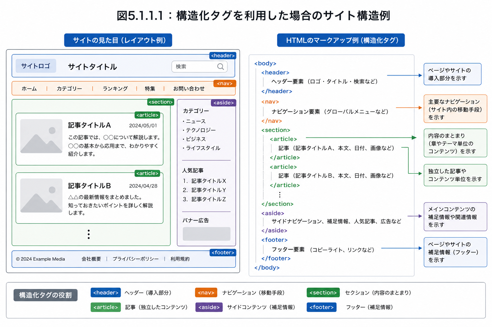

🕒 学習目安 約24分
構造化データ
基本：構造化タグと構造化マークアップの違い、実践：JSON-LDによるOrganization・WebSite・Breadcrumb・Product・Article等の実装、検証ツール
3 / 10
実践：構造化タグの種類と記述方法
HTML文書のbody要素では、検索エンジンに正しい情報を伝えられるよう、適切なアウトライン（文書構造）を形成することが大切です。構造化タグを使えば、この文書構造を検索エンジンに明示的に伝えられます。
| 構造化タグ | 意味と解説 | 本にたとえると |
|---|---|---|
<section> | 見出しを付けられる文章のまとまり。1つの見出し（h要素）＋本文＋補足情報で構成される | 「章」 |
<article> | 独立した記事・コンテンツであることを示す。ブログでは記事全体、ニュースサイトでは個々のニュースが該当する | 本「全体」 |
<aside> | 本文と関連するが区別すべき補足情報。サイドバーにも使われる | 「コラム」 |
<nav> | グローバルナビゲーションやパンくずリストなど、主要ページへのリンク集 | 「目次」 |
<header> | 導入やナビゲーションの補助。文書のヘッダー情報を表す<head>タグとは別物 | 「表紙」 |
<footer> | 作成者情報や著作権表示（Copyright）、関連文書へのリンクなど | 「裏表紙」 |

図：構造化タグを使ったサイト全体の構造例。左の見た目のレイアウトが、右のHTMLマークアップ（header・nav・section・article・aside・footer）に対応する
この中で基本となるのが<section>です。見出しを付けられる文章のまとまりを「セクション」と呼び、セクションを区分するタグを「セクショニングコンテンツ」と呼びます。<section>を基本形として、そのうち「記事」「補足情報」「ナビゲーション」という特別な役割を持つものに、それぞれ<article><aside><nav>が定義されています。一方、<header>と<footer>は単体で成り立つセクションではなく、セクションに付属する要素であり、セクショニングコンテンツには含まれません。
例：1つの記事ページを構造化タグでマークアップする場合
<header>
記事タイトル・日時
↓
<section>
本文の段落
↓
<aside>
補足情報
↓
<footer>
著者情報
図1：<article>全体の中に、<header>（タイトル・日時）・<section>（本文）・<aside>（補足）・<footer>（著者情報）を入れ子にして配置する例。この<header>と<footer>は、<article>に付属する文章のまとまりであり、ページ全体のheader/footerとは別物
💡
Point
このように構造化タグでマークアップしても、ブラウザの見た目そのものは変化しません。あくまで、文書構造と各文章のまとまりの意味を検索エンジンに明示する役割を持ちます。